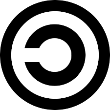

Relexión de Richard Stallman

La forma más simple de hacer que un programa sea libre es ponerlo en el dominio público, sin derechos reservados. Esto le permite compartir el programa y sus mejoras a la gente, si así lo desean. Pero le permite a gente no cooperativa convertir el programa en software privativo. Ellos pueden hacer cambios, muchos o pocos, y distribuir el resultado como un producto privativo. Las personas que reciben el programa con esas modificaciones no tienen la libertad que el autor original les dio; el intermediario se las ha quitado. En el proyecto GNU, nuestro objetivo es el dar a todo usuario la libertad de redistribuir y cambiar software GNU. Si los intermediarios pudieran quitar esa libertad, nosotros tendríamos muchos usuarios, pero esos usuarios no tendrían libertad. Así en vez de poner software GNU en el dominio público, nosotros lo protegemos con Copyleft. Copyleft dice que cualquiera que redistribuye el software, con o sin cambios, debe dar la libertad de copiarlo y modificarlo más. Copyleft garantiza que cada usuario tiene libertad.